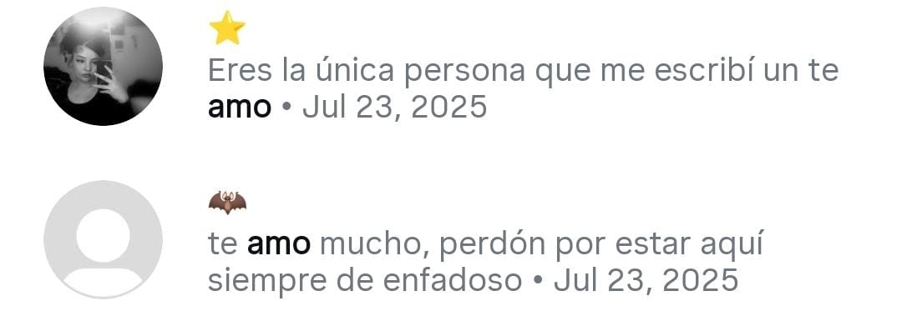
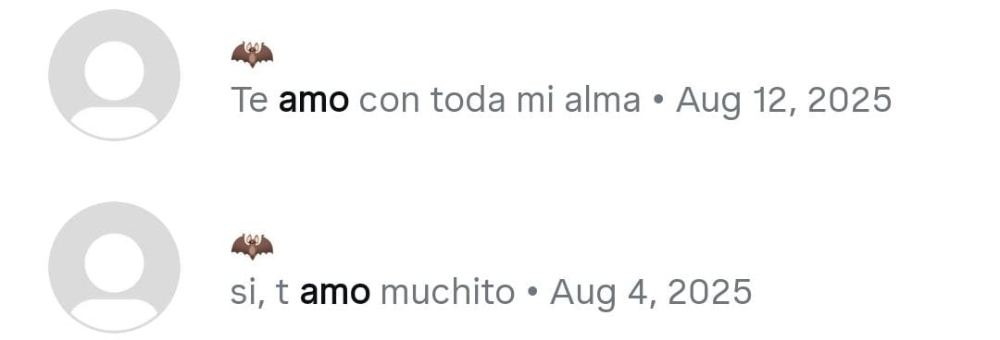

DATO RANDOM: Aún recuerdo la primera vez que supe de ti; tú ni siquiera sabías que yo existía, jaja.
¿Te gustaría recordar conmigo?
Todo comenzó con una llamada mientras jugábamos videojuegos junto a tu hermana y otra personita que nunca llegué a conocer. Recuerdo esa mezcla de frialdad e inseguridad que transmitías en esa primera impresión. Gracias a esa llamada terminamos intercambiando nuestros Instagram.
Después de eso seguimos con nuestras vidas como si nada, aunque en el fondo yo quería hablarte para conocerte mejor, pero tenía miedo de que me ignoraras. Por eso te agradezco mucho que hayas sido tú quien envió el primer mensaje.
Con el paso de los mensajes fui perdiendo el miedo a que me ignoraras. Desde entonces traté de pasar más tiempo contigo: invitándote a llamadas, jugando y enviándote mensajes constantes 💌.
A veces pienso que hoy en día el “te amo” se dice tan comúnmente que parece perder su sentido. Como si fuera una frase de rutina y no un sentimiento real. Es extraño, porque para mí el amor no es algo que se dice a la ligera, es algo que se siente y se demuestra. Decir “te amo” debería ser especial, algo que nace de verdad del corazón, no solo una costumbre.
Sin duda tuve miedo de decirte "te amo" por primera vez, pero sabes que expreso lo que siento y cómo no amar a quien me inspira a ser mejor persona.
Contigo aprendí a expresarme mejor, a ser un poco más abierto y más humano. Cuando nos conocimos por primera vez, desconfiabas de mí; ahora espero que no desconfíes de mis palabras.
Antes te dije que siempre estaré para ti. Si en algún momento me necesitas, no dudes en contactarme, haré todo lo posible por ti.

Sí, te amo, pero no como un amor de la actualidad, sino como un amor que nace del alma, un amor mexicano de antes.
Porque en México, cuando amamos, lo hacemos hasta después de la muerte.

1.- Tus ojos
2.- Tu sonrisa
3.- Tu risa
4.- Tu forma de ser
5.- Tu inteligencia
6.- Tu sentido del humor
7.- Tu creatividad
8.- Tu pasión por lo que amas
9.- Tu bondad
10.- Tu paciencia
11.- Tu apoyo incondicional
12.- Tu capacidad para escuchar
13.- Tu honestidad
14.- Tu capacidad para adaptarte a los cambios
15.- Tu generosidad
16.- Tu empatía
17.- Tu perseverancia
18.- Tu optimismo
19.- Tu humildad
20.- Tu lealtad
21.- Tu ternura
22.- Tu pasión por aprender
23.- Tu gusto por los videojuegos
24.- Tu dedicación
25.- Tu capacidad para hacerme reír
26.- Tu amor por la vida
27.- Tu sinceridad
28.- Tu entusiasmo
29.- Tu forma de ver el mundo
30.- Tu sensibilidad
31.- Tu amor por los animales
1.- Tu amor por Dios
2.- Tu voz
3.- Tu amor por la música
3.- La motivacion constante que me transmites
4.- Cómo me inspiras
5.- Tu amor por la naturaleza
6.- Tu habilidad para resolver problemas
7.- La energía que transmites
8.- Te gusta el sushi
9.- Tu capacidad para inspirar a otros
10.- Tu amor por el té
11.- Tu Tranquilidad
12.- Tu habilidad para la cocinar
13.- Tu mirada cuando te brillan los ojos
14.- Haria todo lo posible para que ames este dia y seas la envidia de todos
15.- Tu amor por los paisajes
16.- Tu sentido de la responsabilidad
17.- Tu capacidad para motivarme
18.- Tu manera de quererme
19.- Tu habilidad para comprender
20.- Tu sencillez
21.- Tu manera diferente de ser
22.- La confianza que me inspiras
23.- Me haces sentir protegido
24.- La felicidad que me inspiras
25.- Me siento cómodo contigo
26.- Me haces sentir querido
27.- Tu manera de emocinarte
28.- Tus gustos excentricos
1.- Tu forma de expresarte
2.- Tu bondad
3.- Tu capacidad para hacerme sentirme mejor
4.- Aceptarias mi afecto fisico aunque no es lo tuyo
5.- Horas de llamadas sin aburrirnos
6.- Tu amor por el color negro
7.- Tu capacidad para hacerme sentir seguro
8.- Tu amor por la fotografía
9.- Tu habilidad para hacerme reír incluso en los momentos difíciles
10.- Tu amor por la comida
11.- Tu capacidad para hacerme sentir comprendido
12.- Simplemente te amo
13.- Tu habilidad para hacerme sentir valorado
14.- Cómo te abres emocionalmente conmigo
15.- Tu capacidad para hacerme sentir feliz
16.- Tu amor por lo romantico
17.- Tu habilidad en los videojuegos
18.- Tuvimos un mundo en Minecraft
19.- Estas conmigo cuando nadie más lo hace
20.- Cómo coinsidimos en muchas cosas
21.- Me haces valorar más la vida
22.- Tu apoyo incluso teniendo tus propios problemas
23.- Amas los mangos
24.- Tu amor por la vida misma
25.- Me encanta cómo me haces sentir cuando compartimos tiempo
26.- Me encantan tus ojitos todos hermosos.
27.- Me gusta cuando me das afecto.
28.- Adoro tu personalidad.
29.- Me haces sentir bien cuando me escuchas.
30.- Me encanta cómo me entiendes.
31.- Me gusta que siempre estás ahí para mí.
1.- Llenaste mi mundo de felicidad
2.- Me ayudas en mis recaidas
3.- Me sacaste de esa ansiedad que odiaba
4.- Eres parte de mi vida un complemento
5.- AMO tu hermosa mirada
6.- Eliminaste ese vacio que sentia
7.- El ineteres que demostraste en mi bienestar
8.- Me impulsaste a ser mejor persona
9.- Cuando estoy contigo los problemas de mi mente se despejan
10.- Elevas mis animos
11.- Amo pasar tiempo comtigo
12.- Antes mis ojos eres perfecta
13.- Tu habilidad para hacerme sentir comprendido incluso cuando no estoy seguro de lo que siento
14.- Me ayudas alejarme de los malos habitos
15.- Haces sentirme seguro incluso cuando me siento vulnerable
16.- Tu amor por las flores
17.- Tu habilidad para hacerme sentir realmente querido incluso estando lejos de ti
18.- Lo tierna que eres
19.- Tu capacidad para hacerme sentir feliz simplemente con tu presencia
20.- Tu amor por la vida y todo lo que ofrece.
21.- Me despejas de todos mis problemas de mi mente
22.- Quiero ver tu sonrisa todas las mañanas
23.- Cuando estoy contigo me siento en paz
24.- Calmaste las voces de mi cabeza
25.- Por ti sonrio
26.- Me gustaria quitarte todas tus inquietudes
27.- Me gustaria hacerte feliz todos los dias de tu vida
28.- Me gustaria que nunca te sientas sola
29.- Muchos dias cada que despierto lo primero que hago es pensar en ti
30.- Me gustaria que nunca te sientas triste
1.- Eres mi persona favorita
2.- Contigo soy 0 problemas
3.- Tu voz me calma
4.- Contigo siento que no pasa el tiempo
5.- estando contigo me siento mucho mejor
6.- De verdad amo tus ojitos de perla
7.- Me enseñas a valorar la vida
8.- Simplemente te amo
9.- Siento que no hacen falta motivos, solo quiero amarte
10.- Amo el té de Jazmin y tu te llamas Jasmine
11.- A veces sueño que pasamos tiempo juntos
12.- Me haces sacar mi lado lindo y romantico
13.- Cuando ya no podia más tu fuiste la unica persona que estuvo ahi para mi
14.- Tuviste confianza en mi
15.- Nunca me haz hecho daño en el tiempo que nos conocemos
16.- No dejo de pensarte
17.- Me dijiste que me querias
18.- Me demostraste amor a pesar de que casi no lo haces
19.- Te agrado la idea de mudarnos a un ranchito lejos de todo mundo
20.- Te quedaste sin necesidad de yo pedirlo
21.- Me buscaste solo para pasar tiempo conmigo
22.- No me juzgas.
23.- Me aceptas tal como soy.
24.- No me juzgaste por mi pasado
25.- Me aceptaste en tu vida
26.- Amo verte sonriente
27.- Me ayudas a cumplir mis metas
28.- Te amo
29.- Dormias en llamada conmigo para no sentirme solo
30.- Gracias a ti ya no soy el mismo
31.- Cuando estoy contigo pierdo la nocion del tiempo
1.- para que nunca te sientas insegura
2.- En parte vivo gracias a ti
3.- Cada cosa romantica me hace recordar a ti
4.- He intentado mejorar mi bienestar gracias a ti
5.- Amo, en verdad amo tu forma de ser
6.- Amaria besar tus mejillas
7.- Te mereces el mundo entero
8.- Pienso que siempre me abrazas
9.- Me demuestras que estas para mi
10.- Amaria ver animes junto a ti
11.- Daria mi vida por ti
12.- Estaria hasta el fin de la existencia contigo
13.- Eres la luna de mi mundo
14.- Por ti iria hasta el inframundo
15.- Amo darte amor
16.- Nunca heriste mis sentimientos
17.- Solo contigo he llegado hasta este nivel con los detalles
18.- Mis madrugadas ahora son menos tristes gracias a ti
19.- Me enamora tu inteligencia
20.- Para mis ojos eres como una obra de arte
21.- Por ti haria lo que sea
22.- He llegado al punto de solo querer estar contigo a pesar que amo la soledad
23.- Aceotaste compartir tu espacio personal junto a mi
24.- Tienes mi confianza absoluta
25.- Quiero protegerte hasta el fin
26.- Confiaria mi vida en ti
27.- Podria descansar junto a ti sin ninguna preocupación
28.- Conoces la mejor versión de mi
29.- Te cuidaria siempre aunque sea a costa de mi vida
30.- Se que nunca me haras daño
1.- Siempre tienes palabras de apoyo
2.- Tu mirada transmite paz
3.- Me haces querer esforzarme más
4.- Eres mi mejor compañía
5.- Me haces querer ser alguien que te cuide
6.- Se que siempre me apoyaras
7.- Estoy muy seguro que nunca me dejaras solo
8.- En tus ojitos se encuentra mi alivio
9.- Me enseñas amarme
10.- Haces que sienta que puedo hacer todo cuando estoy junto a ti
11.- Me haces muy feliz
12.- Amo pasar cada segundo junto a ti
13.- Tus palabras siempre me alientan
14.- Tengo un temor de perderte
15.- Llenas mi mundo de felicidad
16.- No hay nadie como tu
17.- Nadie se compara a ti
18.- Cambiaste mi vida
19.- Estando contigo me sineto mucho mejor
20.- Por ti cruzaria por medio de una tormenta
21.- Me apoyaste desde siempre
22.- No tienes miedo de expresarte
23.- Por ti me esfuerzo cada dia
24.- Quiero hacerte tan feliz como tu me haces sentir
25.- Aunque casi no hablemos nunca me abandonas
26.- Amo tu nombre de princesa
27.- Amaria estar junto a ti
28.- Eres completamente sincera conmigo
29.- Sigues conmigo apesar de saber como soy
30.- Eres mi felicidad
31.- De verdad amo tu personalidad
1.- Más pasa el tiempo y más te quiero
2.- Me transmites una enorme confianza
3.- Se que me seguirias queriendo si algun dia lo pierdo todo
4.- Cambiaste mi forma de ver la vida
5.- Cambiaste mi caracter
6.- Por ti lo dejaria todo
7.- Se que me cuidarias si algun dia enfermo
8.- Nunca me tuviste miedo o desconfianza por mi pasado
9.- Aunque dices que no yo se que me dejarias comer de tu mango
10.- Amas el mango tanto como yo a ti
11.- Te preocupas por mi vienestar
12.- Gracias a ti trato de ser mejor cada mañana
13.- Nunca me dejaste abajo
14.- Nunca me diste la espalda
15.- Compartiste tus gustos conmigo
16.- Siempre me respetaste
17.- Nunca criticaste mi manera de ser
18.- Tu apoyo incondicional me hizo amarte más
19.- En ciertas cosas eres mi contraparte pero a la vez coincidimos en demasiadas cosas
20.- ¿Ya dije que amo tus ojos tan hermosos?
21.- Amo tus labios bonitos
22.- Me ayudaste a plantearme nuevos sueños y metas
23.- Estuviste todo este tiempo a mi lado
24.- Eres muy valiente
25.- Nunca te rindes
26.- Por ti cambie casi completamente el rumbo de mi vida
27.- FELIZ CUMPLEAÑOS CORAZÓN DE MELÓN
28.- Te amo con mi alma, eso incluye tambien amarte despues de mi muerte
29.- Me quieres tal como soy
30.- Me levantas mis animos
31.- Tus "Te quiero" abrazan mi alma
1.- Aunque este destrozado siempre me levanto gracias a ti
2.- Ahora el unico respeto que me importa es el tuyo
3.- Me hiciste recordar el valor de la vida
4.- Valoro el tiempo que pasamos juntos
5.- Me hiciste sentirme querido de verdad
6.- Tu me elegiste para pasar parte de tu tiempo
7.- Las acciones valen más que las palabras pero en verdad amo tus ojos
8.- Desarrolle un cariño incondicional por ti
9.- Siempre respetaste nuestras diferencias
10.- Se que compartiriamos del mismo taco
11.- Nunca me hiciste dudar de nada
12.- Solo con recordarte me haces feliz
13.- Estoy seguro que estarias conmigo hasta el dia de mi fin
14.- Estoy más seguro de que me esperarias para comer e incluso me invitarias de tu comida
15.- Tal vez no lo sabes pero a partir de cierto dia fuiste mi lugar seguro
16.- No me tuviste miedo ni me trataste mal a pesar que venia del infierno
17.- Cuando sijiste "se que tu no eres malo" ese dia te entregue mi vida entera
18.- Siempre senti que te preocupabas por mi
19.- Te daria el mundo entero por como me has tratado
20.- Hay noches en las que te pienso en silencio
21.- Me respetasate a pesar de mi cultura y diferencias
22.- Contigo puedo bajar la guardia
23.- Solo te amo, si?
24.- En verdad te preocupaste por mi
25.- Aceptaste darme los $.50c de tu paga, es un gesto tan hermoso
26.- Llegaste a mi vida como un angel mandado por dios
27.- Por respeto a ti deje el alcohol
28.- Te respeto más que a nadie
29.- En tus ojos veo alguien que desea ser amada profundamente
30.- Eres muy especial para mi
1.- Se que siempre estas para mi
2.- Me apoyas a pesar que tienes tus propios problemas
3.- Si meto las manos al fuego por ti, se que estarias ahi para ayudarme a sanar
4.- Trato siempre darte lo mejor de mi
5.- Me haces feliz por eso daria todo de mi para verte feliz
6.- Solo a ti te entregaria toda mi confianza a pesar que hace años deje de confiar en las personas
7.- Te entrego mi corazón y con ello todo mi amor, cuidalo por favor
8.- Contigo lo malandro se me quita jjjj
9.- Pienso en ti y todo es mucho mejor
10.- Recuerdo tus palabras de aliento
11.- Eres mi calma en la vida
12.- Eres mi luz de guia
13.- Eres mi motivo en mi razón
14.- Contigo el mundo es mucho mejor
15.- Mis problemas disminuyen contigo
16.- Mi futuro no lo quiero si no estas conmigo en un ranchito comiendo mangos
17.- Gracias a ti deje mi pasado y gran parte de mi dolor
18.- Eres mi refugio y mi perdón
19.- Cuando dices que me quieres yo te sigo sin temor
20.- No soy de bailar pero por ti lo haria hasta que tú no puedas más
21.- La luna me recuerda el hermoso brillo de tus ojos
22.- Te esperaria mil y un noches
23.- Se que me quieres
24.- Me diste otras formas de ver la vida, por eso yo daria mi vida por ti
25.- Cambiaste mi mundo gris por uno azul
26.- Estoy seguro que nunca me traicionarias
27.- Eres la paz en mi vida llena de guerra
28.- Me aceptas y eso es muy valioso para mi
29.- Amas el pozole, como no amar a alguien que ama el pozole hahaha
30.- Imitaste la frase que más amo "Soy ese"
31.- Solo por ti sere mejor que ayer
1.- Nunca me rechazarias una muestra de aprecio
2.- Amas la tranquilidad al igual que yo
3.- Contigo siento que tengo todo
4.- Contigo pase de ser antipatico y frio a alguien que se preocupa por el bienestar
5.- Aceptarias hacer carne asada junto a mi (mi sueño)
6.- Amas las plantas, juntos tendriamos un jardin hermoso
7.- Contigo me senti perdonado
8.- Fuiste mi unica compañia por un tiempo
9.- Contigo puedo expresar mis sentimientos
10.- Un abrazo tuyo bastaria para hacerme sentir mejor
11.- Eres super linda
12.- Dejaste tu huella en mi vida
13.- Posiblemente me dejarias dormir en tus brazos y eso no tiene precio, lo amaria demasiado
14.- Apreciarias mis detalles auneque sean pequeños
15.- En cierto modo amo que seas sentimental, se me hace super tierno
16.- Cuando estoy conigo me siento como en el cielo
17.- Me relajas solo con estar conmigo
18.- Me haces ser cursi
19.- Me devuelves el brillo cuando me deprimo
20.- Eres lo que le hacia falta a mi vida, alguien en quien confiar
21.- Mi querer no es pasajero, llevo mucho tiempo queriendote intensamente
22.- Por ti todo soy capaz
23.- Un dia te dije "Te amo" y ya no me calme
24.- Mejoraste mi actitud
25.- Me alegro con cada mensaje tuyo
26.- Pasaron meses y aun sigo perdido en tus ojos bonitos
27.- Me encariñe demasiado contigo
28.- Te agradezco todo el tiempo que estuviste conmigo
29.- Construiria un reinado solo para ti
30.- Eres tan linda en todos los aspectos
1.- Solo a ti te he escrito cartas (aunque no sean fisicas)
2.- En mis ojos eres como una obra de arte
3.- Tu sonrisa me deja segago
4.- Me contaste parte de tu historia
5.- Confiaste en mi a tal punto que formamos una linda amistad
6.- Me ayudaste a tomar desiciones importantes en mi vida
7.- Relajaste mi mente que era un desastre
8.- Evitaste que volviera a esos dias malos
9.- Cambiaste mi presente
10.- Perdi mi fe en todo pero me devolviste parte de ella
11.- Cambiaste mis pensamientos ya que la mayoria de ellos eran malos
12.- Compartimos momentos muy divertidos
13.- Pienso en ti en todas partes
14.- Me enseñas cosas nuevas
15.- Compartes todos tus gustos conmigo
16.- Quiero abrazarte y nunca soltarte
17.- Fuiste mi amor despues de la guerra
18.- Solo tengo ojos para ti
19.- Sentia mi vida perdida pero apareciste tú y con ello intente llevarla mejor
20.- Cuando sentia que ya no podia siempre estuviste ahi
21.- Por si no sabias, este dia cumplo años hahaha
22.- Te amo con todo mi ser y mi alma, y te amare incluso despues de mi muerte
23.- Me haces sentir en cierta forma "especial"
24.- Ahora mi mundo eres tú
25.- Aún sigue pasando el tiempo y aún más te quiero
26.- Amo tu sonrisa y tu hermosa mirada
27.- Desearia que cada segunto junto a ti se convirtieran en años
28.- Me haces sentir que somos uno solo
29.- Eres mi todo
30.- Por ti no le temeria a nada
31.- Amaria pasar siempre este dia contigo para volver a iniciar con el dia 1 y demostrarte que te seguiria amando
Hola Shirley, espero de corazón te encuentres muy bien.
Quise hacer algo lindo para tu cumpleaños pero actualmente no tengo lo necesario para regalarte algo hermoso, te debo tu regalo pero en cuanto pueda lo hare!
no queria dejarte con las manos vacias asi que hice esta web para poder felicitarte por tu cumpleaños. Es un poco dificil para mi el expresarme, de ante mano te pido una disculpa por eso, tambien por los errores o cosas repetidas que llegue a tener, estare revisando y corrigiendo
Lo hice con todo mi amor, espero te guste. FELICIDADES! ❤️🩹